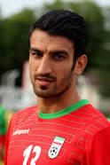

Hossein Mahini
Iranian footballer
Hossein Mahini is an Iranian footballer who played for the Persian Gulf Pro League side Saipa and the Iran national football team as a defender. Wikipedia
Born: September 16, 1986 (age 35 years), Bushehr
Career start: 2005
Current team: Saipa F.C. (Defender)
Parents: Mohammad Hossein Mahini
Children: Maisa Mahini, Suren Mahini
Siblings: Alireza Mahini